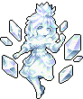

Slime Queen
<史莱姆王>
ID: M23301_000 · Standard counterpart: M23301 · Alter Theme: 水晶 / Crystal · Source: 常驻 / Permanent · Step: S · Weight: 10 · CharacterRole: 输出 / DPS
Animated

Still
Thuộc tính (Class · Type · Element · Terrain)
| Class | Type | Element | Terrain |
|---|---|---|---|
| Mage (法师) | Demon (魔灵) | Light (光系) | Forest (森林) |
Race name (used for talent filter):
晶体元素 / Crystalline(race name晶体元素≠ Type race-family魔灵).
Codex (Insight)
水晶法典 / Crystal Law (XD14001_028)
| Field | Value |
|---|---|
| Step | S |
| Type | 专属 / Unique |
| Race lock | — |
| Element/Class lock | 不限 |
| MaxLevel | 3 |
| Effect (canonical CN / EN, base value at L1) | 造成技能伤害+1。 / Deal 1 more skill DMG. |
| SpecifyRoleIDs | M23301_000 |
| Description | — |
Effect text is L1 base value. Higher levels usually scale linearly; verify in-game.
Stats
Base Stats (L1, no modifiers)
| Stat | Mage | Light | Demon | Forest | S | Base L1 |
|---|---|---|---|---|---|---|
| HP | 1 | 0 | 0 | 2 | 8 | 11 |
| STR | 0 | 0 | 0 | 0 | 0 | 0 |
| SPI | 0 | 2 | 2 | 2 | 0 | 6 |
| AGI | 0 | 2 | 0 | 0 | 0 | 2 |
| SPD | 4 | 2 | 2 | 0 | 8 | 16 |
| Toughness | 10 | 0 | 0 | 2 | 8 | 20 |
| LUK | 0 | 0 | 0 | 0 | 0 | 0 (only from gear / Lucky-Streak talent) |
| Starting Mana | — | — | — | — | — | 0 (game default) |
| Max Mana | — | — | — | — | — | 30 (game default) |
Sum of 5 axes from
BasicAttrDataTablefiltered byType='职业'/'元素'/'种族'/'地型'/'位阶'. HP/STR/SPI/AGI don't have keyword pages so labels stay plain.
Combat-stat mapping (Mage class): ATK pool ← SPI · DEF pool ← AGI · Weakness ← STR. The initialAttack/Defence/Weak from BasicAttr per-axis adds to the mapped raw stat (not separate combat stats).
| Pool | Mage | Light | Demon | Forest | S | Sum | → Adds to |
|---|---|---|---|---|---|---|---|
| initialAttack | 15 | 0 | 2 | 0 | 8 | 25 | SPI |
| initialDefence | 0 | 2 | 0 | 2 | 0 | 4 | AGI |
| initialWeak | 0 | 0 | 0 | 0 | 0 | 0 | STR |
→ L1 displayed stats (raw + class combat-mapping): - HP 11 · STR 0 · SPI 6 + 25 = 31 · AGI 2 + 4 = 6 · SPD 16 · Toughness 20 · LUK 0 · Mana 10/30
Higher-level stats = base + level growth + Insight + passive/talent modifiers + gear. Growth formula per
BasicAttrDataTable.GrowthType1..10(cycle of 10) — exact application rule TBD pending in-game datapoint verification.
Skill (Active)
彩虹光束 / Prismatic Beam (UniqueDataTable.M23301_000)
| Field | Value |
|---|---|
| SkillType | 攻击 / Attack |
| TargetType | 敌方 / Enemy |
| Target | 全体目标 / All Targets |
| MaxTarget | 3 |
| Times | 1 |
| Value | 7 |
| StatusLayer | 5 |
| ExtraValue1/2/3 | 2 / 0 / 0 |
| ActionType | 特殊攻击 / Special Attack |
Effect:
史莱姆王召唤晶石射出耀眼虹光，对敌方全体目标造成7点伤害，并对目标造成5层泯灭，每次释放技能使自身造成技能伤害+2。
Summons a crystal shooting rainbow light. Deals 7 DMG to all enemies and applies 5 stacks of Nullify. Each skill cast increases skill DMG by 2.
Attack (Normal Attack)
普通攻击 / Normal Attack (BD30001) — UnlockStar 1
优先对敌方前排目标造成1点伤害。
Targets the front enemy first. Deals 1 DMG.
(Value0=1.)
Race
晶体元素 / Crystalline (BD20017) — UnlockStar 2
获得魔力+1。
Gain +1 Mana.
(Value0=1.)
Trait
掌控 / Commanding (BD10427_000) — UnlockStar 3
【获得】敌方目标行动结束后使自身获得3点魔力，但不能进行普通攻击与治疗。
[Gain] Gain 3 Mana at enemy action end but cannot basic attack or heal.
(Value0=3.)
Title
泯灭者 / Eraser (BD51027) — UnlockStar 4
【减益】释放技能后对目标造成3层泯灭。
[Debuff] Apply 3 stacks of Decay after casting a skill.
(Value0=3.)
Perk
魔力凝结 / Mana Coalesce (BD40936_000) — UnlockStar 5
【属性】魔力上限-3。
[Stat] -3 Max Mana.
(Value0=3.)
Level-up Materials
| Slot | CN | EN |
|---|---|---|
| 1 | 魔力结晶 | Mana Crystal |
| 2 | 奶油菇 | Cream Shroom |
| 3 | 孢子菇 | Spore Shroom |
| 4 | 荧光鱼 | Glowfish |
Talents
Talent unlocks ở 5★, dùng 天赋果实 / Talent Fruit để mở + reroll. Pool eligible cho unit này = 100 total = 1 exclusive + 10 race + 21 class + 10 element + 58 generic.
Format: Effect column = canonical
TalentDataTable.Effect_ENwith highest-tier values filled (bold).Tierscolumn lists which tiers the talent has (e.g.CBAS,AS,S). Per-tier values in italic at end asValue0[/Value1[/Value2]]. Talent names are canonical fromName_EN— do NOT paraphrase.
Exclusive (1)
TF14504 — 蓄能魔晶 / Charge Crystal (tiers: S) - Effect: 释放技能时如果本回合没有普通攻击则使本次造成单段技能伤害+100%。 - Deal +100% single-hit DMG when casting a skill if no basic attacks occurred this turn.
(per-tier values: S: 100)
Race-restricted: Crystalline 晶体元素 (10 talents across 5 base IDs)
| Base ID | CN | EN | Tiers | Effect (highest-tier filled) & per-tier values |
|---|---|---|---|---|
| TF01010 | 魔力收集 | Mana Gather | S | Gain 2 Mana after applying Decay. (S: 2) |
| TF14501 | 魔晶核心 | Crystal Core | S | Gain +1 Mana. Gain 1 Mana after taking skill DMG. (S: 1/1) |
| TF14502 | 魔力捕捉 | Mana Capture | AS | Gain 2 Mana after enemy casts skill. (A: 1 · S: 2) |
| TF14503 | 纯净无瑕 | Pure Flawless | CBAS | Take -12 debuff stacks coming from next attacks when having no current debuffs. (C: 3 · B: 6 · A: 9 · S: 12) |
| TF14505 | 晶石增幅 | Crystal Amp | AS | Deal +1 skill DMG per 20 stacks of Shield. (A: 40/1 · S: 20/1) |
Class-restricted: Mage 法师 (21 talents across 10 base IDs)
| Base ID | CN | EN | Tiers | Effect (highest-tier filled) & per-tier values |
|---|---|---|---|---|
| TF10201 | 天赋异禀 | Gifted | AS | +20 Max Mana. Gain 20% of Max Mana as Action Mana. (A: 10/10 · S: 20/20) |
| TF10202 | 施法演示 | Spell Demo | S | After casting a skill, grant other allies +1 skill DMG. (S: 1) |
| TF10203 | 法师联盟 | Mage Guild | AS | +2 Action Mana. Gain +1 Action Mana per Mage ally. (A: 1/1 · S: 2/1) |
| TF10204 | 技能穿透 | Spell Pierce | CBAS | Ignore 40 DEF when casting skill. (C: 10 · B: 20 · A: 30 · S: 40) |
| TF10205 | 多重施法 | Multicast | AS | +2 Multi-hit skill hits but deal -50% skill DMG. (A: 1/50 · S: 2/50) |
| TF10206 | 诅咒专精 | Curse Focus | CBAS | Apply +4 stacks of debuffs but apply -2 stacks of buffs. (C: 1/2 · B: 2/2 · A: 3/2 · S: 4/2) |
| TF10207 | 魔具大师 | Tool Master | AS | Gain +4 all stats from Off Hand gear. Off Hand gear's Basic Bond level +2. (A: 2/1 · S: 4/2) |
| TF10208 | 魔力共振 | Mana Resonate | S | +1 Basic attack targets this turn after casting a skill. (S: 1) |
| TF10209 | 毁灭风暴 | Ruin Storm | S | Deal +1 multi-hit skill hits and +10 skill DMG to the nearest enemy. (S: 1/10) |
| TF10210 | 魔力禁锢 | Mana Lock | AS | All enemies lose 4 Action Mana. (A: 2 · S: 4) |
Element-restricted: Light 光系 (10 talents across 6 base IDs)
| Base ID | CN | EN | Tiers | Effect (highest-tier filled) & per-tier values |
|---|---|---|---|---|
| TF11401 | 净化之光 | Purify Light | AS | Apply +2 stacks of Cleanse. Apply +2 stacks of Cleanse to enemies. (A: 1/1 · S: 2/2) |
| TF11402 | 鼓舞之光 | Inspire Light | S | Apply +1 stacks of Inspire. Grant 3 stacks of Inspire to other allies at turn start. (S: 1/3) |
| TF11403 | 坚毅不屈 | Indomitable | AS | Gain +2 stacks of Fortitude. The unit's HP Loss effect is reduced by 20 while having Toughness. (A: 1/10 · S: 2/20) |
| TF11404 | 坚定信仰 | Firm Faith | AS | Gain +2 stacks of Faith. Gain 4 stacks of Faith after taking DMG. (A: 1/2 · S: 2/4) |
| TF11405 | 无瑕之体 | Flawless Form | AS | Take -2 stacks of debuffs. Apply +2 stacks of buffs when having no debuffs. (A: 1/1 · S: 2/2) |
| TF11406 | 削弱敌意 | Weaken Hostility | S | Attacker loses 2 ATK after taking a hit. (S: 2) |
Generic (no restriction) (58 talents across 19 base IDs)
| Base ID | CN | EN | Tiers | Effect (highest-tier filled) & per-tier values |
|---|---|---|---|---|
| TF10001 | 强而有力 | Strong | CBAS | +16 STR. Effect doubles if STR is at least 100. (C: 4/100 · B: 8/100 · A: 12/100 · S: 16/100) |
| TF10002 | 头脑清晰 | Clear Mind | CBAS | +16 SPI. Effect doubles if SPI is at least 100. (C: 4/100 · B: 8/100 · A: 12/100 · S: 16/100) |
| TF10003 | 反应迅速 | Quick Reflexes | CBAS | +16 AGI. Effect doubles if AGI is at least 100. (C: 4/100 · B: 8/100 · A: 12/100 · S: 16/100) |
| TF10004 | 身材紧实 | Fit Body | CBAS | +16 HP. Effect doubles if HP is at least 100. (C: 4/100 · B: 8/100 · A: 12/100 · S: 16/100) |
| TF10005 | 意志强韧 | Strong Will | CBAS | +16 Toughness. Effect doubles if Toughness is at least 100. (C: 4/100 · B: 8/100 · A: 12/100 · S: 16/100) |
| TF10006 | 四肢灵活 | Nimble Limbs | CBAS | +16 SPD. Effect doubles if SPD is at least 100. (C: 4/100 · B: 8/100 · A: 12/100 · S: 16/100) |
| TF10007 | 严阵以待 | Battle Ready | CBAS | Take -12 total DMG when in front position. (C: 3 · B: 6 · A: 9 · S: 12) |
| TF10008 | 好运连连 | Lucky Streak | CBAS | +8 Luck. Effect doubles if Luck is at least 50. (C: 2/50 · B: 4/50 · A: 6/50 · S: 8/50) |
| TF10009 | 核心位置 | Core Position | CBAS | Deal +8 total DMG when in mid position. (C: 2 · B: 4 · A: 6 · S: 8) |
| TF10010 | 玻璃大炮 | Glass Cannon | CBAS | Deal +12 total DMG but take +5 total DMG when in back position. (C: 3/5 · B: 6/5 · A: 9/5 · S: 12/5) |
| TF10011 | 魔力爆发 | Mana Surge | CB | Gain 30 Mana at turn 2 start. (C: 4/30 · B: 2/30) |
| TF10012 | 生命重组 | Life Rebuild | CB | Gain 100 HP at turn 2 start. (C: 4/100 · B: 2/100) |
| TF10013 | 意识重塑 | Mind Reshape | CB | Gain 100 Toughness at turn 2 start. (C: 4/100 · B: 2/100) |
| TF10014 | 谋而后动 | Think First | AS | Cannot act on turn 1 but gain +8 Action Mana on subsequent turns. (A: 4 · S: 8) |
| TF10015 | 调动情绪 | Mood Control | AS | Cannot act on turn 1 but gain +4 Hit Mana on subsequent turns. (A: 2 · S: 4) |
| TF10016 | 废物利用 | Scrap Use | AS | Gain +2 all stats per Bronze Bond. (A: 1 · S: 2) |
| TF10017 | 东拼西凑 | Patchwork | AS | Gain +2 all stats per Silver Bond. (A: 1 · S: 2) |
| TF10018 | 羁绊大师 | Bond Master | AS | Gain +2 all stats per Gold Bond. (A: 1 · S: 2) |
| TF10019 | 装备精通 | Gear Expert | AS | Gain +2 all stats from each Orange+ gear. (A: 1 · S: 2) |
Cross-references
- Active skill localization:
Activeskills_Name_M23301_000/Activeskills_Des_M23301_000 - In recruit pool:
SkinSummonDataTable.M23301_000 - Other relics targeting this unit:
XD14001_028